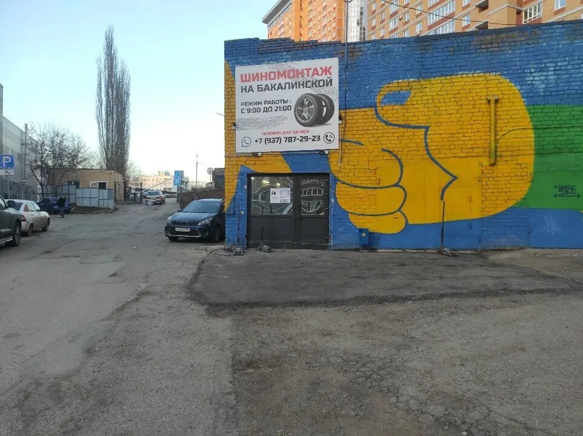
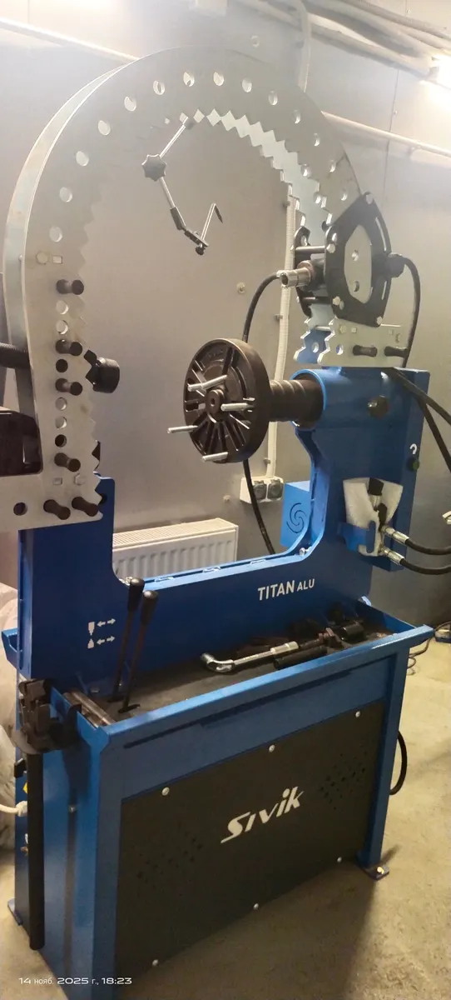
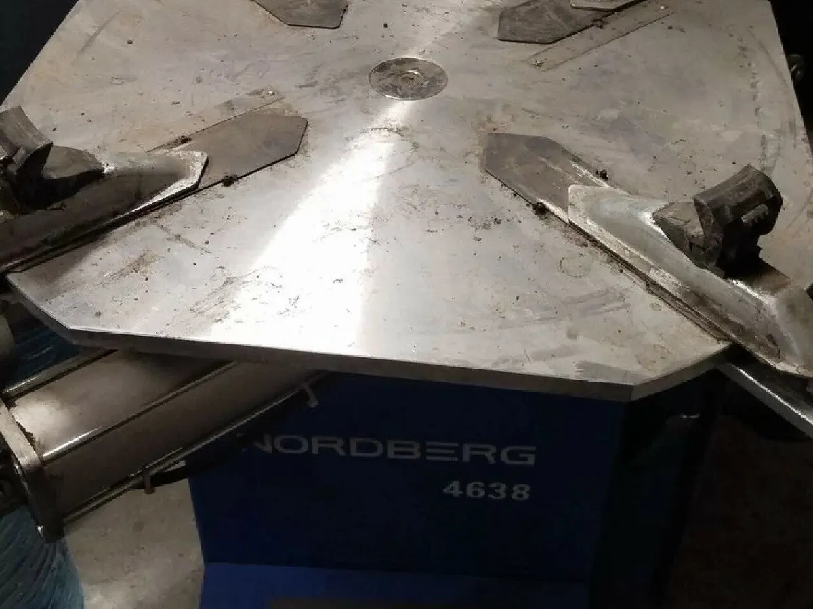
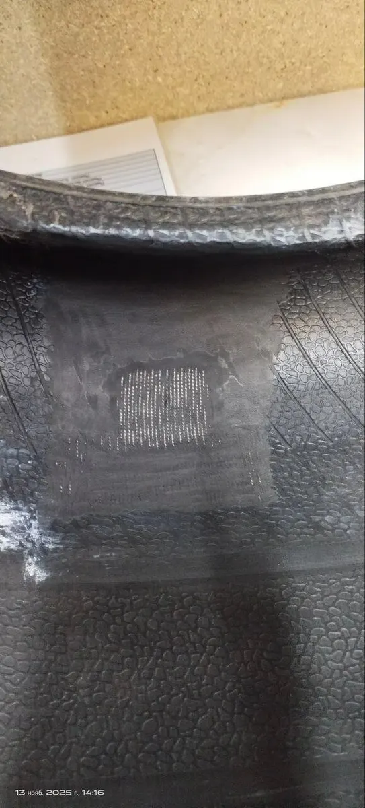

Шиномонтаж · Уфа
Шиномонтаж на Бакалинской: замена шин и правка дисков в Уфе
Переобувка, ремонт проколов и правка дисков - выберите услугу и время, запись в одном сообщении. Стоимость назовёт мастер.
- Запись одним сообщением
- Ждём: пн-сб 09:00–01:00, вс 09:00–00:00
- 5,0 и 38 отзывов на Яндекс.Картах

Услуги
Стоимость называем при записи: она зависит от размера колёс, типа дисков и объёма работ.
Что можно выбрать
- Правка и сварка дисковв отзывах: сделали варку двух спиц на дискеуточнить
- Ремонт шин жгутамив отзывах: ставят чёрные жгуты, которые не вылезают со временемуточнить
- Шиномонтаж и балансировкав отзывах: быстро, чётко, цена приятно удивилауточнить
- Дошиповка шинна объявлении в шиномонтаже: восстановление шипованной резиныуточнить
Как записаться
Пишете нам
Расскажите, какая машина и что нужно сделать, или выберите услугу, день и время в форме ниже.
Уточняем детали
Администратор подтверждает время и отвечает на вопросы.
Приезжаете
Адрес: Уфа, Бакалинская улица, 64Б/2.



Что пишут гости
Принимают ко времени
В отзыве: записалась заранее, подъехала ко времени, не ждала, сразу принялись обслуживать.
Называют цену сразу
В отзыве: привёз диск на ремонт, сделали варку двух спиц, по цене не дорого вышло, сориентировали сразу.
Берутся за любую работу
В отзыве: берутся за любую работу, цена приемлемая, качество не страдает.
Отзывы с Яндекс.Карт
«Приезжал весной на перекид сделали все отлично, быстро. Словил на дороге саморез, приехал к парням, сделали ремонт колеса, предоставили скидку как постоянному клиенту. Спасибо за работу. Рекомендую друзьям.»
Инкогнито 4502 · 28 мая
«Отличный шиномонтаж!Уже не первый раз обращаюсь к ним.Быстро, качественно, приемлемые цены, слаженно работают, ребята профессионалы своего дела.Спасибо.Однозначно рекомендую!!!»
Евгений Колесников · 26 октября
«Сегодня неожиданно пробило колесо на Салаватке. Спасибо сотруднику шиноманташки, который ехал на работу. Остановился, помог сменить колесо, (поставить запаску), сопроводил до шиномантажки, где мне быстро и качественно восстановили колесо. Огромная благодарность. Рекомендую .»
Ольга Матузко · 19 января
Отзывы с карточки на Яндекс.Картах.
Частые вопросы
Как записаться?
Выберите услугу, день и время в форме на странице или напишите в мессенджер. Администратор подтвердит запись.
Где вы находитесь?
Уфа, Бакалинская улица, 64Б/2. пн-сб 09:00–01:00, вс 09:00–00:00.
Сколько это стоит?
Стоимость называем при записи: она зависит от размера колёс, типа дисков и объёма работ.
Выберите время - подтвердим запись
- Адрес
- Бакалинская улица, 64Б/2, Уфа
- Часы
- пн-сб 09:00–01:00, вс 09:00–00:00
- Телефон
- +7 (937) 787-29-23